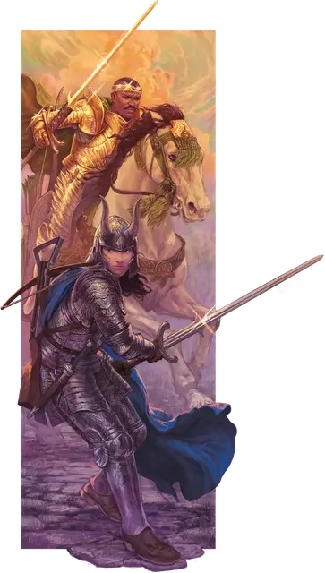

Рыцарь
Knight
Средний Гуманоид, любое мировоззрение

Класс Доспеха 18 (латы)
Хиты 52 (8к8 + 16)
Скорость 30 футов
| мод | спас | ||
|---|---|---|---|
| СИЛ | 16 | +3 | +3 |
| ЛОВ | 11 | +0 | +0 |
| ТЕЛ | 14 | +2 | +4 |
| мод | спас | ||
|---|---|---|---|
| ИНТ | 11 | +0 | +0 |
| МДР | 11 | +0 | +2 |
| ХАР | 15 | +2 | +2 |
Чувства пассивное Восприятие 10
Языки один любой язык (обычно Общий)
Опасность 3 (700 опыта)
Бонус мастерства +2
Среда обитания Город
Особенности
Храбрый. Рыцарь совершает с преимуществом спасброски от испуга.
Действия
Мультиатака. Рыцарь совершает две рукопашные атаки.
Двуручный меч. Рукопашная атака оружием: +5 к попаданию, досягаемость 5 футов, одна цель. Попадание: Рубящий урон 10 (2к6 + 3).
Тяжёлый арбалет. Дальнобойная атака оружием: +2 к попаданию, дистанция 100/400 футов, одна цель. Попадание: Колющий урон 5 (1к10).
Лидерство (перезаряжается после короткого или продолжительного отдыха). В течение 1 минуты рыцарь может произносить особую команду или предостережение каждый раз, когда невраждебное существо, видимое им в пределах 30 футов, совершает бросок атаки или спасбросок. Это существо может добавить к4 к броску, если может слышать рыцаря и понимает его. Существо может получать преимущество только от одного Лидерства одновременно. Этот эффект оканчивается, если рыцарь становится недееспособным.
Реакции
Парирование. Рыцарь добавляет 2 к КД против одной рукопашной атаки, которая должна попасть по нему. Для этого рыцарь должен видеть атакующего и должен использовать рукопашное оружие.
Описание
Рыцарь это воитель, поклявшийся служить правителю, религиозному ордену или благородному делу. Мировоззрение рыцаря определяет пределы его преданности. Во время выполнения задания или при обычном патрулировании королевства рыцаря часто сопровождает свита, включающая сквайров и наёмников, являющихся обывателями.